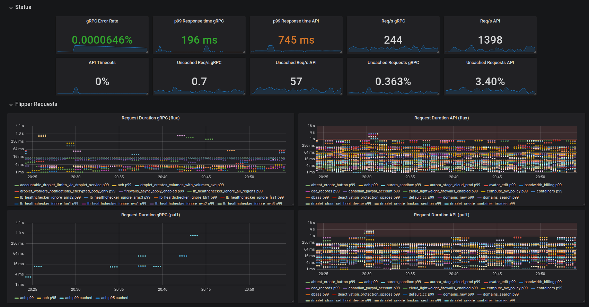
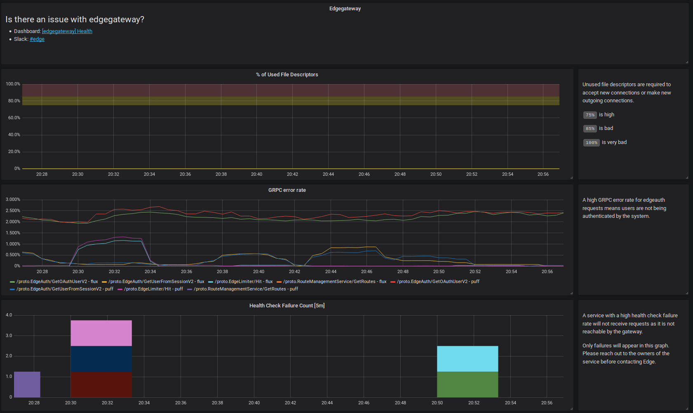

Maurício Linhares / @mauriciojr / Software Engineer at DigitalOcean
We need to understand how production systems are doing their job.
Any finite resource you're using.
These metrics provide you with a glimpse of what is going on with the system in general and allows for noticing differences in different hosts running the same application.
Same metrics mentioned before but for all the subsystems you have: database, caches (add cache hit ratio here), file system access, other applications being called.
Six users load your site in 0.1 second, 4 load it in 2 seconds, average is 0.86.
They might show you a pretty number when 50% of your customers are having an awful experience.
Specially at the beginning, don't be too harsh on you, pick a collection of percentiles that make sense (0.90, 0.95 and 0.99, for instance) and remember that every 9 you add after 0.99 is going to be exponentially more expensive than before.
Nice, your app has metrics and they're looking good, but customers are still complaining and saying that the metrics you're showing don't match what they see.
This doesn't mean you shouldn't collect them at your app, but that you must also collect them at the customer's side so you can compare.
Create test apps that call your service trying to replicate your customer´s environments as much as possible and use that instead.
The nuclear option
Alert comes in, machine has died, application needs to be moved to a new instance.
Not Acceptable
Not an alert.
Each one of your main metrics is a Service Level Indicator. Collect them and build a Service Level Objective.
53% of visits are likely to be abandoned if pages take longer than 3 seconds to load.
Setting an objective that's at the limit of today's metrics might produce a huge amount of toil to maintain.
... it't not an alert
Failure happens, alerting on all failures is a huge mistake.


You're going to be looking at this during outages when you just woke up and you have no idea where you are. Make sure it is easy to understand.